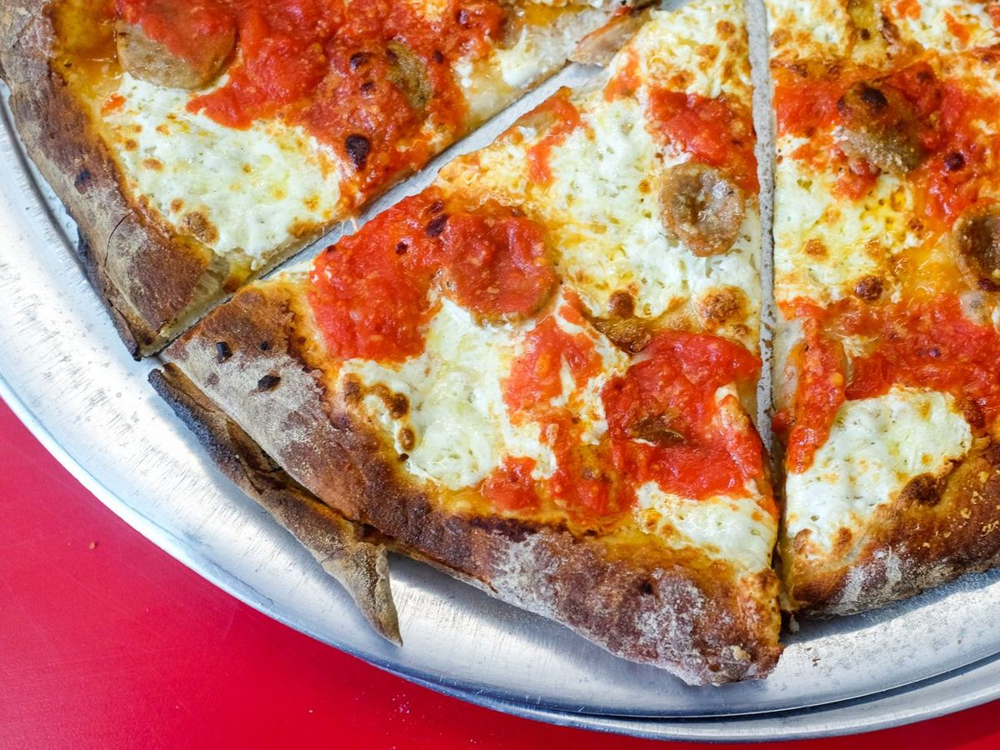
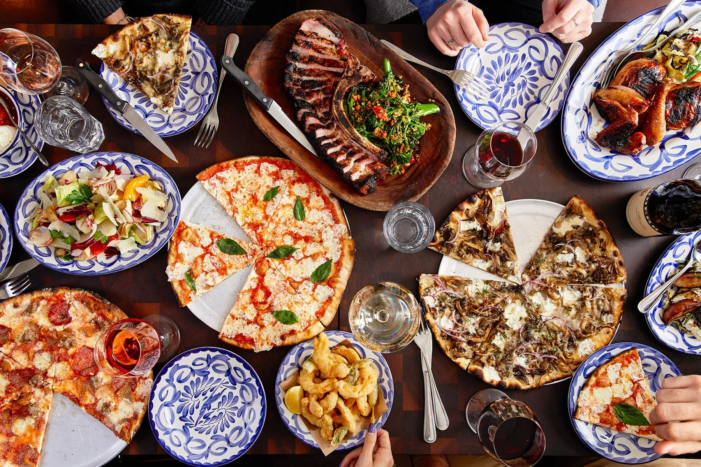
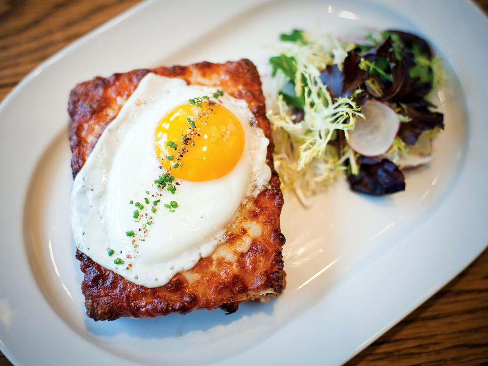

What’s the Big Apple got that no other great American food city has?
Just about everything — and more of everything than anywhere else, its tastemakers will tell you. “New York has a diversity and depth” rivaled possibly only by London’s, says Mimi Sheraton, the author most recently of this year’s “1,000 Foods to Eat Before You Die.” “New Yorkers love the concept of more, more, more,” says Clark Wolf, an influential restaurant consultant with bases in Manhattan and Sonoma County, Calif. When it comes to restaurants, “New York has a deeper bench of them than any other American city,” says former New York Times food critic Frank Bruni. “It’s pure numbers.” I recognize the city they’re all talking about, the metropolis of 8.5 million eaters in five boroughs. As a regular visitor to New York for more than 25 years, I’ve paid respects to the trailblazers of the times and checked off the cooking of some of the most famous chefs in the country. A cursory roll call might trumpet the Quilted Giraffe, Le Bernardin, the Spotted Pig, Daniel Boulud, Mario Batali, David Chang — followed by at least 100 more names. New York is a Big Deal. But New York is not all that, 24/7.
I say this having spent 11 days there recently, logging time at nearly 50 restaurants, bars, shops and markets as part of my continuing survey of the 10 best food cities in the country. Libraries of books have been written about what makes Manhattan tick; my mission was to focus on how it stacks up, foodwise, against other destinations. Such a task in a city with more than 45,000 restaurants is, to put it mildly, daunting; in a roundup this month of new restaurants, the New York Times previewed more than 60 fresh faces. So I ate, drank and shopped — high and low; inside luxe dining rooms and outside on dirty streets; in Manhattan and in two other boroughs — to try to make sense of what many consider the greatest show on Earth. I had a fabulous dinner at Jean-Georges, where the hostess let me know I could order anything from the formal dining room even though I was perched in the bar. A lunch of barbecued short ribs and spicy squid at Kang Ho Dong Baekjeong in Koreatown conjured Seoul in every bite (and sight), and despite the ear-splitting noise at Momofuku Noodle Bar in the East Village, I could still hear my companions swoon over David Chang’s spicy fried chicken sandwich, secreted in from his new Fuku next door and some of the best fast food of my life. Los Angeles is a month away for me; for now, Sushi Nakazawa in New York serves the finest omakase in the land. Carbone for updated Italian-American? Daniel, even if only for drinks and Frenchy snacks in the hushed lounge? Russ & Daughters, the beloved shop on the Lower East Side, for pastrami-cured salmon and a side of people-watching? I have nothing but happy memories of them all. And munching on a hot dog from Gray’s Papaya, amid exhaust fumes and a sea of humanity, I sensed that all seemed right. Restaurants swell not just with locals, but also with tourists. (A record 56.4 million visitors dropped by last year.) Dining rooms typically collect “the Japanese at 6, the Americans at 8 and the Spaniards at 10:30,” Reichl says chefs have told her. “That’s probably not true of other cities.”
You can’t mention New York without tawking about Brooklyn, blanketed with dozens of dining rooms that feel like the platonic ideal of a neighborhood restaurant (the models being Franny’s and Marlow & Sons) and concepts designed to please millennials (as its name suggests, Heatonist sells hot sauce, period). The rustic Hometown Bar-B-Que in Red Hook bests some of the South’s famous pit stops, and my new favorite fusion cuisine may be Jewish-Japanese after eating a grilled Japanese pancake, okonomiyaki, dressed with sauerkraut and pastrami at Shalom Japan.
Food shopping in New York is complicated. On one hand, superior steaks can be carved while you wait at gems such as Florence Prime Meat Market; Fairway Market is sought out for groceries; and every possible spice seems to be in stock at the worldly Kalustyan’s. But the weekend farmers markets take a back seat to their counterparts on the West Coast, and some shoppers consider themselves lucky to be able to procure their day-to-day fuel from Whole Foods Market rather than from the neighborhood bodega. “The secret in New York: The ingredients aren’t as good as other places,” says Wolf, the restaurant consultant who might be spoiled by his time in California. He has joked that “if it was grown in Manhattan, scrape it off. If it was grown in Brooklyn, you might want it.” His point: It’s a farm-to-table world, and New York’s tomatoes are probably “coming in by subway.” Because of the city’s notoriously small home kitchens, a lot of New Yorkers opt to either order in or dine out, says Ruth Reichl, the influential former editor of Gourmet magazine. “This has always been a city that ate out. It’s part of the zeitgeist.” Restaurants swell not just with locals, but also with tourists. (A record 56.4 million visitors dropped by last year.) Dining rooms typically collect “the Japanese at 6, the Americans at 8 and the Spaniards at 10:30,” Reichl says chefs have told her. “That’s probably not true of other cities.”
Reliable public transportation, including forthcoming ferry service to the outer boroughs, is another boon for restaurants. “Going out to eat is easy here,” says Reichl. Back when she was the restaurant critic for the Los Angeles Times and Bryan Miller had the job for the New York Times, Reichl would find herself driving home from Malibu thinking, “When Bryan Miller leaves a restaurant, all he has to do is say, “Taxi!’ ” Speaking of the Gray Lady, Craig Claiborne, hired as food editor by the Times in 1957, is credited with creating the template for modern-day newspaper food sections. He brought an exactitude to the paper’s recipes, traveled the country and the world to report on culinary finds and introduced readers to great cooks who, because of what he had written, became some of the best-known in the business: Marcella Hazan, Diana Kennedy and Julie Sahni. Claiborne applied the same rigor to restaurants when he became a critic and began visiting anonymously, multiple times, paying for the meals and rating them using a star system. Novel at the time, the protocol remains in effect. So does the paper’s influence. When it comes to telling the world about New York, the city’s powerful media are “kingmakers,” says the celebrity chef Mario Batali. As a consequence, ambitious chefs flock to New York from around the world, bringing new ingredients and techniques. “The innovation just never stops,” says Danny Meyer, the visionary behind Union Square Hospitality Group and the restaurateur who wrote the book on hospitality, 2007’s “Setting the Table.” The sheer volume of what Meyer calls “gastronauts who eat out for sport in New York” allows for such specialized spots as Superiority Burger, a vegetarian burger joint in the East Village with only six seats and four-hour business days.
More about Brooklyn, the borough that some compare to the Berkeley of yore and that food fans seek out for such local artisanal gems as Mast Brothers chocolate and OddFellows Ice Cream Co.: At some point after 9/11, Meyer says, the cooks and servers living there and commuting to Manhattan discovered they could have successful careers without getting on the subway, even as some of his customers in the city would jest that, for them, “it’s easier to go to London or Paris than Brooklyn,” says the restaurateur. It didn’t take long for Brooklyn to teach Manhattan a few tricks, some as simple as how to improve a basic green salad. “What we have today is a mixed salad of classic lettuces mixed in with purslane and lamb’s quarters that used to be considered weeds by some but are now prized,” Meyer says. As precious as Brooklyn can be, its hospitality workers could teach Manhattan’s a thing or two, too. My server at Marlowe & Sons went over every dish on the menu as if she had cooked the food herself, and a manager at the go-to Middle Eastern bazaar, Sahadi’s, gave me a tiny container of the store’s superior hummus for free when I merely asked for a sample. The No. 1 enemy of the restaurant trade: real estate prices, which tend to minimize the number of risk-takers and mom-and-pop shops. In negotiating a new lease for his signature restaurant, Meyer says he “almost renamed Union Square Cafe ‘Long Island City Cafe.’ ” The $6 million it cost to open the luxury seafood restaurant Le Bernardin in 1986 would probably be $15 million now, says Eric Ripert, its acclaimed chef for the past 24 years.
‘You can’t beat Queens for diversity’
In New York, everything seems to boil down to numbers — usually big ones. Take cooking styles. Robert Sietsema figures there are nearly 200 distinct cuisines, including regional Chinese, Indian and even Ecuadoran styles, in the city he has covered for more than three decades, first as a chowhound for the Village Voice and more recently for the online Eater New York. Who better to introduce me to the largess than my distant relation and the author of this year’s “New York in a Dozen Dishes”?
We could’ve spent a day on Arthur Avenue in the Bronx eating Italian food or in Astoria eating Greek, but instead we meet on a Saturday morning at the gates of the Ganesh Temple Canteen in Flushing with plans to graze around the borough until one of us waves a white flag or turns green. “You can’t beat Queens for diversity,” says Sietsema, who guides me to a basement cafeteria where we feast on dosas and other South Indian dishes while religious cartoons play on overhead TVs. From there, we taxi a mile northwest to the Golden Shopping Mall and head to an underground maze of food stalls, where we hopscotch from a $4 bowl of chili-oil-slicked julienned potatoes, tempeh and mushrooms from Chen du Tian Fu to a cumin-laced, jalapeño-ignited lamb burger from Xi’an Famous Snacks, pausing to marvel at a guy pulling noodles by hand across the aisle. A few blocks away, we stop to see what looks interesting at the carryout window of the sprawling Red Bowl Noodle Shop. My new favorite street food is a Taiwanese sausage-within-a-(rice)-sausage that we devour on the sidewalk.
Then it’s off to East Elmhurst on the 7 train (facetiously dubbed the “Orient Express”) and tacos and tequila at Tacos Morelos, where the signatures include a zesty red pumpkin-seed mole and a taco (over)stuffed with a gooey and delicious chili relleno. The little English in the dining room is on a sign on the wall that reads “CPR available at the counter.” Hang out with the foreign cuisine expert, whom humorist Calvin Trillin dubs “my man Sietsema,” and you learn a few tricks for finding good food on unfamiliar turf. One is to give a restaurant a smell test; cooking aromas are good, “floor wax and urinal cakes” not so much, he advises. Another tip is to check out the diners. Do they look happy? Are they cleaning their plates or merely pushing food around? Sietsema is no snob when it comes to foreign food that might be unfamiliar on its home turf. “Fusion food can be as good as native,” says the man who can be as content eating a pastrami pizza as a pastrami sandwich.
Sietsema is eager to show off even more menus (“Have you ever had momos?” he asks, pausing at a food cart selling nothing but Tibetan dumplings), but I apologize and excuse myself from our high-calorie half-marathon. Regretfully, I have but one stomach to offer, and the previous night had me dining at the new Jams and the starry Jean-Georges and Daniel restaurants, after which I had an only-in-New York moment when I stopped outside Sprinkles on my way back to my hotel to buy a banana cupcake. It was dispensed from an ATM.'A city of food halls'
The leader in American fashion is also a tastemaker when it comes to culinary trends, and has been, seemingly forever: Delmonico’s, opened in 1837, made chic the custom of a la carte menus, liberal dining hours, a plenitude of (French) options and a garden of its own when suppliers couldn’t provide the quality sought by the owners. Today, there may be no better place in the country to catch great art and great food under the same roof as in the museums of Manhattan: Consider the Modern within MoMA, and Untitled on display at the Whitney.
If what’s an even bigger development here spreads, cities around the country can expect more food halls in their future. The Italian extravaganza known as Eataly in the Flatiron got the ball rolling five years ago, followed two years later by Plaza Food Hall near Central Park. Few neighborhoods have been untouched by the delectable phenomenon. Spring saw the debut of Le District in the financial district, an all-French assortment with shops devoted to charcuterie, pastries, cheese, seafood and wine.
Exhibit A at the moment is the freshly minted UrbanSpace Vanderbilt. Among the 20-plus vendors spread over 12,000 feet in the Helmsley Building are Delaney Chicken, Red Hook Lobster Pound and Roberta’s, an offshoot of a popular Italian roost in Brooklyn with great pizza. Project manager Emily Soukas says the guiding principle behind the gathering of artisans is to create or revitalize communities by supporting small businesses in areas where they otherwise couldn’t afford to set up shop. A few of the booths in the venue rotate vendors every few months. “Not only does it help keep the market fresh and exciting,” says Soukas, “it also helps us stay connected to our pop-up-market roots.”
Coming up in 2017, star chef Jean-Georges Vongerichten expects to unveil a 40,000-square-foot food market, along with a seafood restaurant, at the South Street Seaport. Grander still will be the 155,000-square-foot Bourdain Market at Chelsea’s Pier 57, from Anthony Bourdain of “Parts Unknown” acclaim. The smorgasbord of 100 or so retail and wholesale vendors will include a butcher, a fishmonger, a full-fledged restaurant, late hours and food stalls reminiscent of Asian hawker markets, according to the New York Times, which puts the cost at $60 million.From the mouths of critics
William Grimes (1999-2003) remembers a flush economy and “a building boom, delivering a lot of boutique hotels, each with an ambitious restaurant,” plus “a real dessert explosion” resulting in star billing for pastry chefs. “The task for me,” he says, “was not so much identifying the trends as keeping up with the openings,” including the early farm-to-table establishment Blue Hill. Recalls Bruni (2004-2009): “The two hottest restaurants on my watch: Spotted Pig and Momofuku.” Those and similar establishments were notable not for what they added to the dining experience but for what they subtracted: formality and “lumbar support,” among other details. Also, “Brooklyn began to happen in a big way.”
The holder of the mightiest keyboard in the city for the past four years, at least when it comes to places to eat, Pete Wells watches over a landscape strewn with restaurants that offer only tasting menus, vegetables treated with the respect that meat used to get, serious Thai restaurants cooking other than “American takeout Thai” and “the bar-ification of restaurants and the restaurant-ification of bars,” a shift from the traditional structure of a three-course meal. That last trend, says Wells via e-mail, “seems to reflect a change in the way we socialize, maybe even in the way we experience the world, now that our attention spans have all been zapped down to nothing.”
In his engaging romp through Manhattan’s restaurant history, “Appetite City” (2009), Grimes wrote: “New York is a present-tense city. It lives in the moment, perhaps because the city’s full-blast immediacy engages all the senses simultaneously, squeezing the faculties that allow for reflection on the past and speculation about the future. Like riders on a roller coaster, New Yorkers simply hold on tight.”
As high as the bar and the stakes are, the numbers always seem to be in New York’s favor. If one place disappoints, there’s always another — and another — on the next block that might not. More is more, and it works the same way for the restaurateurs. “I tell my team, don’t be bothered if 3 million people hate you,” says Batali. “That’s 5 million left.”